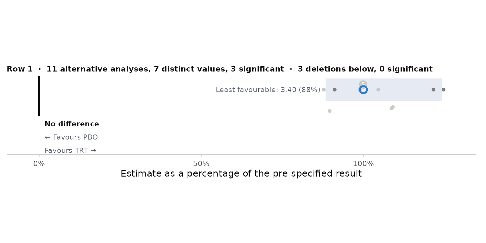

A confirmatory trial has one pre-specified mixed model for repeated measures (MMRM). ballast refits it under families of perturbations of the modelling decisions and the data, judges every refit against the pre-specified estimate, confidence interval and significance level, and classifies the result as robust, sensitive or fragile.
The pre-specified analysis
Describe the analysis once. The example uses the
fev_data set that ships with mmrm, restricted to 100
subjects so the vignette builds quickly.
library(ballast)
dat <- mmrm::fev_data[mmrm::fev_data$USUBJID %in% paste0("PT", 1:100), ]
spec <- stress_spec(dat, response = "FEV1", subject = "USUBJID", visit = "AVISIT",
treatment = "ARMCD", reference = "PBO", covariates = ~ RACE + SEX + FEV1_BL,
contrast_visit = "VIS4", covariance = "us",
method = "Satterthwaite", vcov = "Asymptotic")
spec
#> <stress_spec> pre-specified
#> data: 400 rows, 100 subjects, visits VIS1 VIS2 VIS3 VIS4
#> model: FEV1 ~ RACE + SEX + FEV1_BL + ARMCD + AVISIT + ARMCD:AVISIT + us(AVISIT | USUBJID)
#> contrast: TRT - PBO at VIS4
#> inference: Satterthwaite df, Asymptotic vcov, alpha 0.05
stress_fit(spec)
#> family label kind role is_base converged note estimate
#> 1 base pre-specified alternative sensitivity TRUE TRUE 3.872365
#> stderr df lcl ucl p n_subj n_obs aicc param
#> 1 2.069905 70.88075 -0.2550291 7.999759 0.06550197 99 279 1754.542 NA
#> covariance method vcov covariates alpha
#> 1 us Satterthwaite Asymptotic RACE + SEX + FEV1_BL 0.05If you already have an mmrm fit,
stress_spec_mmrm(fit, reference = "PBO") builds the same
object; from an ADaM BDS data set, stress_spec_adam()
does.
Families
Each family function returns rows in one schema. A few of them:
stress_covariance(spec, c("us", "cs", "ar1h"))[, c("label", "estimate", "stderr", "p", "is_base")]
#> label estimate stderr p is_base
#> 1 us 3.872365 2.069905 0.06550197 TRUE
#> 2 cs 3.532005 1.492399 0.01867436 FALSE
#> 3 ar1h 3.398204 2.088478 0.10824537 FALSE
stress_inference(spec)[, c("label", "estimate", "stderr", "df", "p")]
#> label estimate stderr df p
#> 1 Satterthwaite 3.872365 2.069905 70.88075 0.06550197
#> 2 Kenward-Roger 3.872365 2.018843 70.88075 0.05912569
#> 3 Kenward-Roger (linear) 3.872365 2.093147 70.88075 0.06847896
#> 4 Residual 3.872365 2.069905 267.00000 0.06246752
#> 5 Sandwich, between-within 3.872365 2.000699 174.00000 0.05454936
#> 6 Jackknife sandwich, between-within 3.872365 2.070826 174.00000 0.06316891
stress_covariates(spec)[, c("label", "estimate", "p")]
#> label estimate p
#> 1 without RACE 4.707980 0.02963354
#> 2 without SEX 3.832708 0.07144548
#> 3 without FEV1_BL 4.046893 0.05880214
#> 4 no covariates 4.829839 0.03027465Deletions, re-randomisation, reference-based and delta-adjusted multiple imputation, other estimators, a greedy search for the smallest set of subjects that changes the conclusion, intercurrent-event strategies and continuous perturbation curves are the other families; see the reference index.
Census, verdict and figures
cen <- stress_census(spec, stress_covariance(spec, c("us", "cs", "ar1h")), stress_inference(spec),
stress_covariates(spec), stress_loo(spec, by = "RACE"))
summary(cen)
#> Base analysis: estimate 3.87 (SE 2.07), 95% CI -0.255 to 8, p = 0.0655
#> family kind n significant crossed outside_ci reversed
#> covariance structure alternative 2 1 1 0 0
#> inference alternative 5 0 0 0 0
#> covariate set alternative 4 2 2 0 0
#> leave-one-out: RACE deletion 3 0 0 0 0
#> All sensitivity all 14 3 3 0 0
#> All all 14 3 3 0 0
#> pct_min pct_max max_shift_se role
#> 88 91 0.23 sensitivity
#> 100 100 0.00 sensitivity
#> 99 125 0.46 sensitivity
#> 90 109 0.19 sensitivity
#> 88 125 0.46 sensitivity
#> 88 125 0.46 all
stress_verdict(cen)
#> Base: estimate 3.87, 95% CI -0.255 to 8, p = 0.0655 (alpha 0.05)
#> Counted: 11 alternative analyses, 3 deletions; 3 significant, 3 crossed alpha
#> Outside base CI: 0; direction reversed: 0; largest shift: 0.463 base SE
#> Verdict: SENSITIVE over all counted rows; SENSITIVE over the 14 sensitivity analyses (same estimand; 0 supplementary rows); marginal: base p near alpha
#> Rows that crossed alpha:
#> family label estimate p
#> covariance structure cs 3.53 0.0187
#> covariate set without RACE 4.71 0.0296
#> covariate set no covariates 4.83 0.0303
plot_swarm(cen)
Pre-specify and run in one call
A plan fixes the families and their settings before unblinding;
printing it gives the text a statistical analysis plan can carry.
standard_plan() is the recommended set.
plan <- stress_plan(spec, covariance = list(structures = c("us", "cs", "ar1h")), inference = list(),
covariates = list(), weights = TRUE, loo = list(by = "RACE"), permute = list(n = 99),
reference = NULL, estimator = list(estimators = c("complete_cases", "ancova")),
fragility = list(max_k = 2))
plan
#> Pre-specified stress test
#>
#> Pre-specified analysis: FEV1 ~ RACE + SEX + FEV1_BL + ARMCD + AVISIT + ARMCD:AVISIT + us(AVISIT | USUBJID); contrast TRT minus PBO at VIS4; Satterthwaite df, Asymptotic variance; alpha 0.05; equal LS-mean weights.
#>
#> Perturbation families, run after unblinding exactly as listed; every refit is judged against the pre-specified estimate,
#> its 95% confidence interval and alpha. Classification: fragile if any counted alternative reverses direction or leaves the
#> pre-specified confidence interval; otherwise sensitive if any crosses alpha; otherwise robust. Specifications reached by two
#> families are counted once; tipping-point grids are searches and are not counted; deletions are counted separately.
#>
#> 1. Within-subject covariance structure: structures = us, cs, ar1h
#> 2. Degrees-of-freedom method and variance estimator: defaults
#> 3. Covariate set: defaults
#> 4. Least-squares-mean weighting (equal versus observed margins): defaults
#> 5. Leave-one-out deletions: by = RACE
#> 6. Re-randomisation test: n = 99
#> 7. Estimator class: estimators = complete_cases, ancova
#> 8. Smallest set of subjects that changes the conclusion: max_k = 2
res <- run_plan(plan, seed = 1)
res
#> Pre-specified stress test
#> 8 families, 22 rows, 18 counted; 0.2 min
#> Base: estimate 3.87, 95% CI -0.255 to 8, p = 0.0655 (alpha 0.05)
#> Counted: 14 alternative analyses, 4 deletions; 5 significant, 5 crossed alpha
#> Outside base CI: 0; direction reversed: 0; largest shift: 1.74 base SE
#> Verdict: SENSITIVE over all counted rows; SENSITIVE over the 18 sensitivity analyses (same estimand; 0 supplementary rows); marginal: base p near alpha
#> Rows that crossed alpha:
#> family label estimate p
#> covariance structure cs 3.53 0.0187
#> covariate set without RACE 4.71 0.0296
#> covariate set no covariates 4.83 0.0303
#> re-randomisation test 99 permutations 3.87 0.0300
#> greedy deletion search PT1 4.66 0.0179stress_report() writes a Markdown report with the
figures, stress_tables() the Word or RTF tables and the
census as CSV, stress_html() an interactive page, and
stress_log() the audit trail with the plan’s hash.